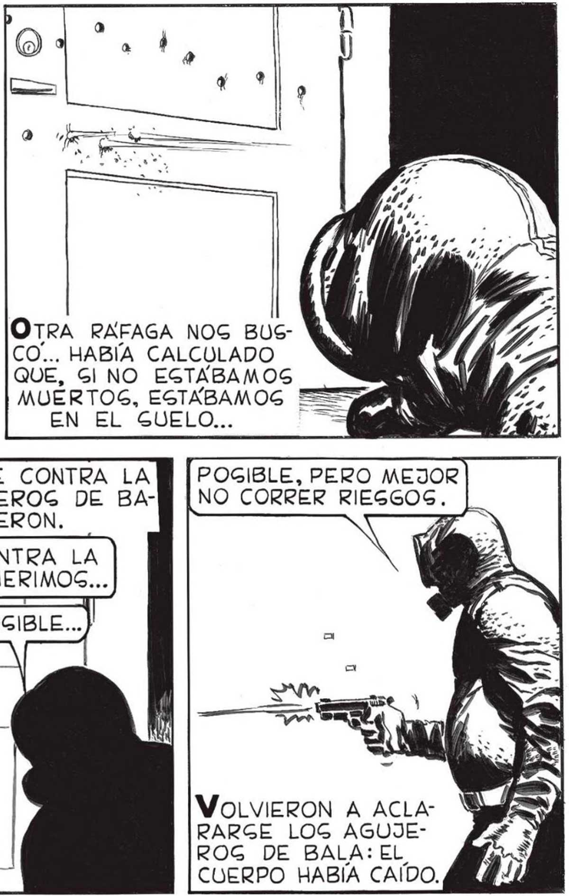
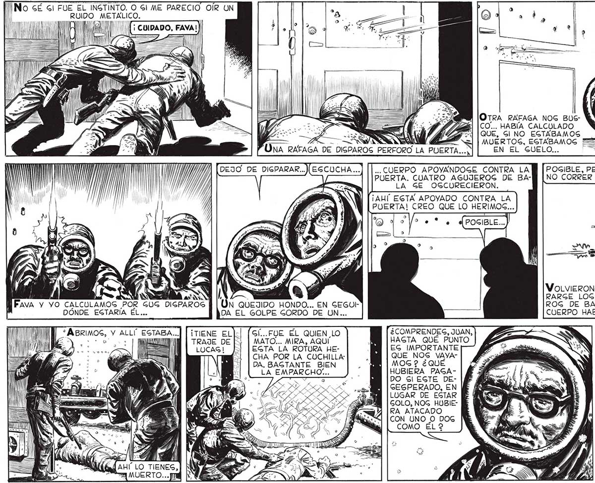

[no se Gl FUE EL INGTINTO. O Gl ME PARECIO OÍR UN RUIDO e A " I Ñ NN ' ' a pe Di E pe OTRA RAFAGA NOG BUSCO... HABÍA CALCULADO -- - NA WI ZG<] | QUE, Gl NO EGTABAMOS DS TEN MUERTOS, EGTABAMOS ===39 Y UNA RAFAGA DE DISPAROS EN EL SUELO... .. CUERPO APOYANDOGE CONTRA LA POGIBLE, PERO MEJOR PUERTA. CUATRO AGUJEROG DE BA-1M | NO CORRER RIESGOS. LA GE OGCURECIERON. ¡AHÚ EGTA APOYADO CONTRA LA PUERTA! CREO QUE LO HERIMOS... ' RARGE LOG AGUJEMN Fava y YO CALCULAMOS POR GUG DIGPAROS N QUEJIDO HONDO... EN SEGOI- ROG DE BALA: EL DÓNDE EGTARÍA ÉL.. DA EL GOLPE GORDO DE UN... CUERPO HABIA CAIDO, E S y cm ) N 2 : É | ¡ A VOLVIERON A ACLAY War ON ÍTIENE ELJ:| (Gf...FOE ÉL QUIEN LO ¿ COMPRENDES, JUAN, : < Trade DE [| | MATO... MIRA, AQUÍ MN [HASTA QUÉ PUNTO . Y PMENTRAS FAVAL LUCAG! Ji [ESTA LA ROTURA HE- MW [ES IMPORTANTE e is A | | CHA POR LA CUCHILLA QUE _ NOS VAVA-| 4 o DA. BAGTANTE BIEN BE | MOG? ¿QUÉ e — NY DICHADO. ON ROS—* AS DO SI EGTE DE- [E MG E WEN A Ps QUE SE GESPERADO, EN PE (E MORIR Y N EL LUGAR DE EGTAR [E NADA 3 Ra Aer GOLO, NOG HUBIE- NE NETAS LOG DÍAS... UN ROS y Y ri TRO DE HOMBRE CUALQUIERA, CONVERTIDO EN AGE: GINO POR LA TERRIBLE CATAGTROFE... Gl, DEBUAMOS IRNOG.

